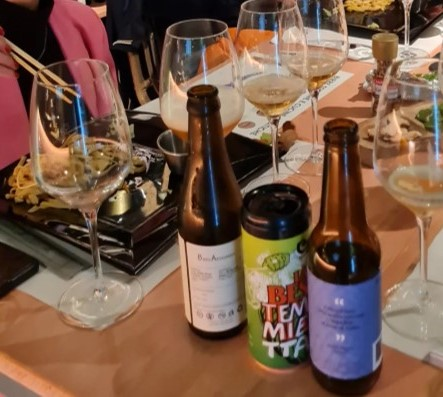

SAKE MONDAY con SCUOLA ITALIANA SAKE – Maggio 2025


ABBINAMENTO BIRRA E CUCINE ASIATICHE con CALICE H – Maggio 2024



DEGUSTAZIONE E ABBINAMENTO BIRRE presso LA DEGNA TANA – Aprile 2024


MASTERCLASS IN 2 SERATE: LA BIRRA ARTIGIANALE GIAPPONESE con SCUOLA ITALIANA SAKE – Aprile 2024


BIRRA ARTIGIANALE ITALIANA con CALICE H – Luglio 2024


ANEDDOTI E BIRRE TRAPPISTE con CALICE H – Anno 2021